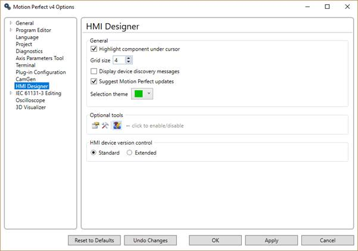

When checked the component under the cursor is highlighted for ease of identification.
This sets the size of the component placement grid in pixels.
When checked Motion Perfect will display messages generated during HMI device discovery.
When checked Motion Perfect will suggest installing a newer version when the connected Uniplay device has more recent firmware than that supported by the currently installed Motion Perfect.
Specify the colour used to highlight components.
|
Icon |
Tool |
|
|
Component properties |
|
|
Component toolbox |
|
|
Data binding |
The optional tool icons have tool tips to make identification easier.
This specifies how Motion Perfect checks for compatibility with HMI firmware. The Standard check is to check that the HMI Firmware is compatible using the Major and Minor version fields of the firmware version. The Extended check checks all the version fields.
To avoid unnecessary updating of the HMI client: set this to “Standard” unless you are using features which are under development and require the latest client.